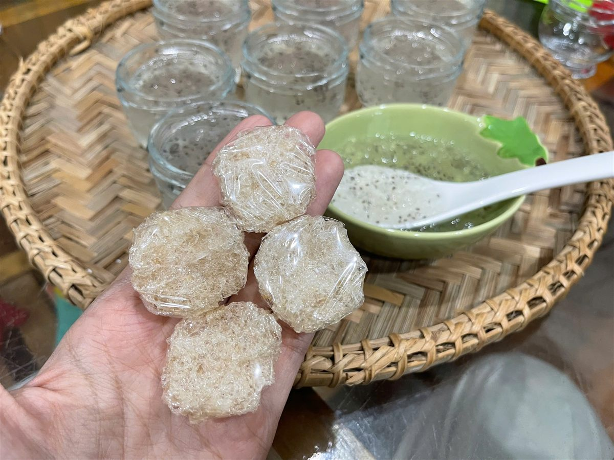
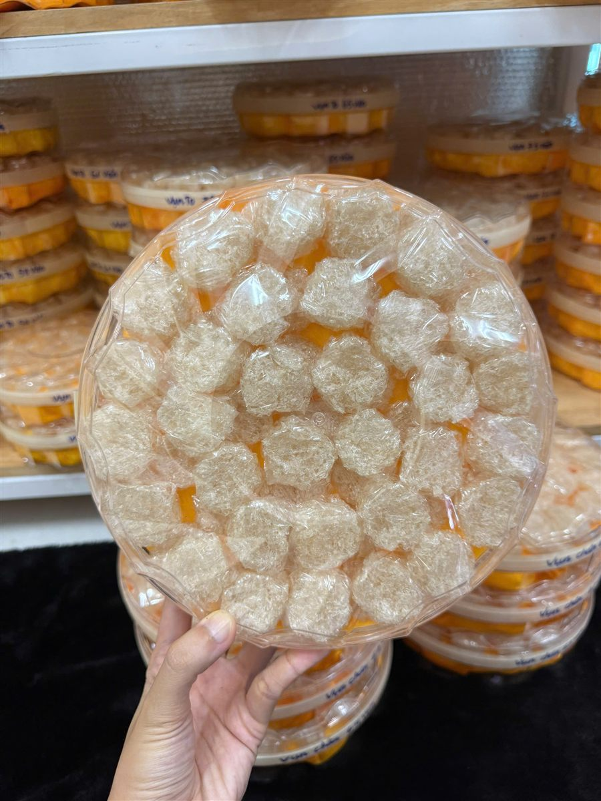

Yến Vụn Và Yến Chia Viên: Có Phải Yến Kém Chất Lượng? Dùng Thế Nào Cho Tiện
Yến Sào Lanest · Đăng ngày 28/10/2026

Trong bảng sản phẩm yến tinh chế, nhiều anh chị lướt qua dòng "vụn" vì nghĩ đó là hàng thừa, hàng kém. Thật ra yến chia viên và yến vụn là cách Lanest tận dụng trọn từng sợi yến sau khi làm sạch, và với nhiều gia đình, đây lại là dạng tiện dùng nhất. Bài này giải thích yến vụn từ đâu ra, chia viên để làm gì, và cách dùng cho đúng.
Mấy viên yến khô trên tay, phía sau là chén yến đã chưng cùng hạt chia
1. Yến vụn từ đâu ra?
Khi thợ ngâm và nhặt lông tổ yến, không phải sợi nào cũng giữ được dài và nguyên. Những mảnh nhỏ tách ra trong quá trình làm sạch được gom lại, gọi là yến vụn. Ở kho của Lanest, phần này còn được chia theo nguồn: vụn từ thân tổ, vụn từ chân tổ, và xơ từ phần bụng tổ.
Yến vụn vẫn là yến thật, vẫn đi qua cùng các bước làm sạch như yến sợi. Sản phẩm yến tinh chế vụn của Lanest được mô tả là 100% nguyên chất, không pha trộn, không chất tẩy trắng, không hương liệu nhân tạo. Điểm khác chỉ là hình thức sợi ngắn, nên giá mềm hơn yến sợi.
Nói cách khác, yến vụn không phải "hàng loại". Nguyên tắc của Lanest là hàng không đạt thì loại thẳng, không "chữa" để bán. Yến vụn là phần yến đã làm sạch, chỉ là sợi không đủ dài để đắp thành tổ sợi. Nhờ vậy cả mẻ yến được dùng trọn, không phí sợi nào, và khách có thêm một lựa chọn vừa túi tiền cho bữa yến hằng ngày.
2. Đắp tổ hay chia viên?
Yến vụn sau khi sạch thường được tạo hình theo hai kiểu:
- Đắp tổ: thợ đắp yến vụn vào khuôn thành hình tổ, nhìn gần giống tổ yến tinh chế thông thường.
- Chia viên: chia thành từng viên nhỏ đều nhau. Ngoài vụn tổ, kho Lanest còn có viên làm từ xơ bụng và vụn chân.
Lanest có thêm hai sản phẩm dạng viên: Yến Chia Viên làm theo yêu cầu (khách chọn loại yến và số lượng), và Yến Chia Viên Sấy Khô gồm yến kèm hạt chia. Cả hai đều ghi nguyên chất, không pha độn, làm thủ công.
| Yến sợi đắp tổ | Yến vụn đắp tổ | Yến chia viên | |
| Sợi | Dài, rõ | Ngắn | Ngắn, nén thành viên |
| Ngâm | Khoảng 30–40 phút | Khoảng 10 phút | Khoảng 20–40 phút (loại sấy khô) |
| Lấy lượng mỗi lần | Phải tách tổ | Phải tách tổ | Lấy theo viên |
| Hợp với | Biếu tặng, thích sợi dài | Dùng hằng ngày trong nhà | Người bận, muốn lấy nhanh |
3. Vì sao chia viên lại tiện?
Một tổ yến tinh chế mỗi lần chưng thường phải bẻ ra, khó lấy đúng lượng. Viên chia sẵn thì lấy một hoặc vài viên là xong, không vụn vãi, không phải cân. Hình dạng không quyết định yến tốt hay xấu, mà quyết định cách dùng: viên tiện cho bữa hằng ngày, tổ nguyên đẹp để biếu.
Lượng dùng tham khảo theo cẩm nang của Lanest: người trưởng thành khoảng 5–10g yến khô mỗi lần, trẻ 1–3 tuổi 2–3g, trẻ 4–12 tuổi 3–5g. Khối lượng mỗi viên tùy mẫu, nên khi mua anh chị hỏi người bán một viên khoảng bao nhiêu gram để tính số viên mỗi lần cho đúng.

Hộp yến chia viên: từng viên yến vụn xếp đều, lấy đủ một lần chưng
4. Ngâm và chưng yến chia viên
- Lấy số viên đủ dùng, ngâm nước sạch, nước lạnh. Yến vụn nở nhanh, khoảng 10 phút; yến chia viên sấy khô khoảng 20–40 phút.
- Cho yến vào thố hoặc hũ chịu nhiệt, thêm nước vừa ngập.
- Chưng cách thủy lửa nhỏ khoảng 20–30 phút. Yến vụn sợi ngắn, đừng chưng quá lâu kẻo tan.
- Cho đường phèn vào cuối cùng. Có thể thêm táo đỏ, kỷ tử, hạt sen tùy khẩu vị.
Chi tiết thời gian ngâm cho từng loại yến có trong bài hướng dẫn chưng yến đúng cách.
5. Bảo quản yến vụn, yến viên
- Yến khô cất nơi khô ráo, thoáng mát, tránh ẩm và nắng trực tiếp, hộp đậy kín.
- Lanest đóng yến tinh chế trong hộp hút ẩm 50g và 100g. Sau khi mở hộp nên dùng trong khoảng 6 tháng.
- Yến đã ngâm hoặc đã chưng thì cất ngăn mát, dùng trong 1–2 ngày.
Xem thêm bài cách bảo quản tổ yến.
6. Mua yến vụn, yến viên: nên hỏi gì?
- Vụn từ phần nào: thân tổ, chân tổ hay xơ bụng.
- Có pha trộn, tẩy trắng hay thêm hương liệu không.
- Mỗi viên bao nhiêu gram, hộp bao nhiêu gram.
- Có giấy kiểm nghiệm, có nhãn ghi rõ thành phần không.
Muốn hiểu thêm các loại tổ yến khác, xem bài các loại tổ yến.
Câu hỏi thường gặp
Yến vụn có kém dinh dưỡng hơn yến sợi không?
Yến vụn là mảnh của chính tổ yến sinh ra khi làm sạch, vẫn là yến thật. Khác biệt chủ yếu là hình thức sợi ngắn, nên giá mềm hơn.
Một lần chưng mấy viên?
Tùy khối lượng mỗi viên. Người trưởng thành dùng khoảng 5–10g yến khô mỗi lần; anh chị hỏi khối lượng viên khi mua để tính số viên.
Có đặt yến chia viên theo yêu cầu được không?
Được. Anh chị gọi 0258 6278 627 để chọn loại yến và số lượng viên.